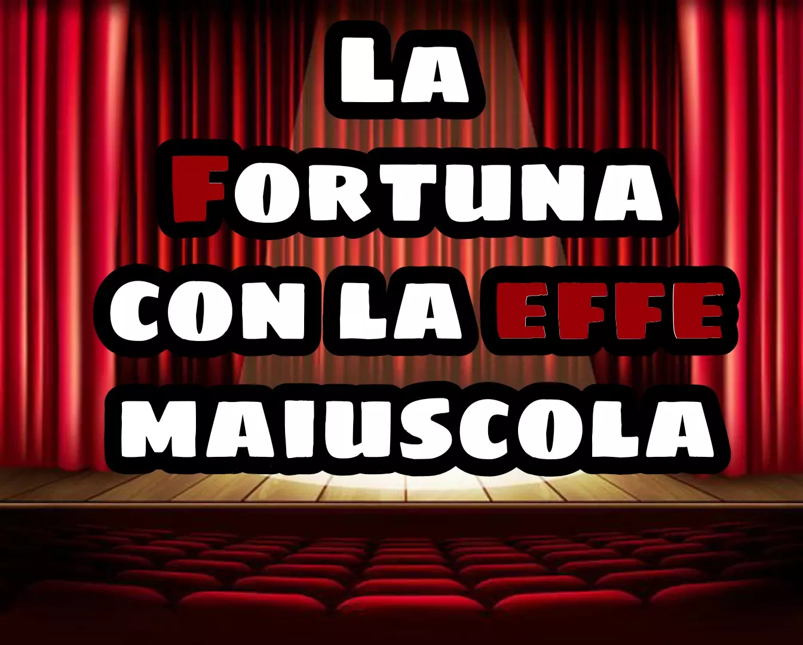
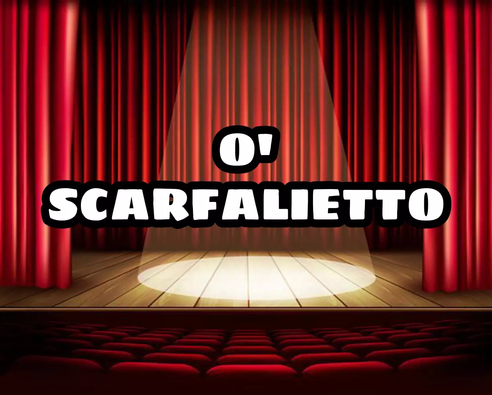
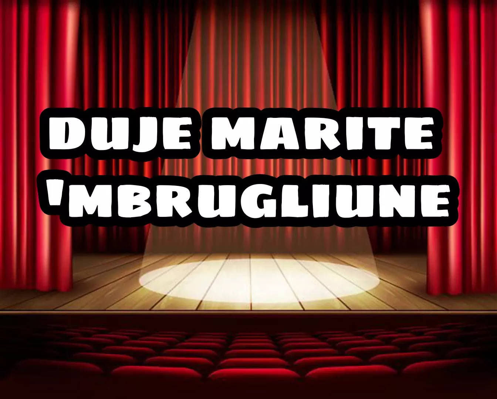

La Fortuna con la effe maiuscola
Commedia scritta nel 1942 da Eduardo De Filippo in collaborazione con Armando Curcio

Se questo è Eduardo
Rivisitazione di brani tratti dalle commedie di E. De Filippo a cura di Cinzia Guzzo
